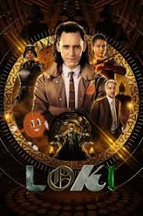

მთავარ გვერდზე დაბრუნება

ფილმის სახელი: ლოკი
ფილმის შეფასება: 8.2 / 10
ფილმის მოკლე აღწერა: ცვალებადი ბოროტმოქმედი ლოკი კვლავ იბრუნებს ცელქობის ღმერთის როლს ახალ სერიალში, რომლის მოქმედებაც „შურისმაძიებლები: დასასრული“-ს მოვლენების შემდეგ ვითარდება.